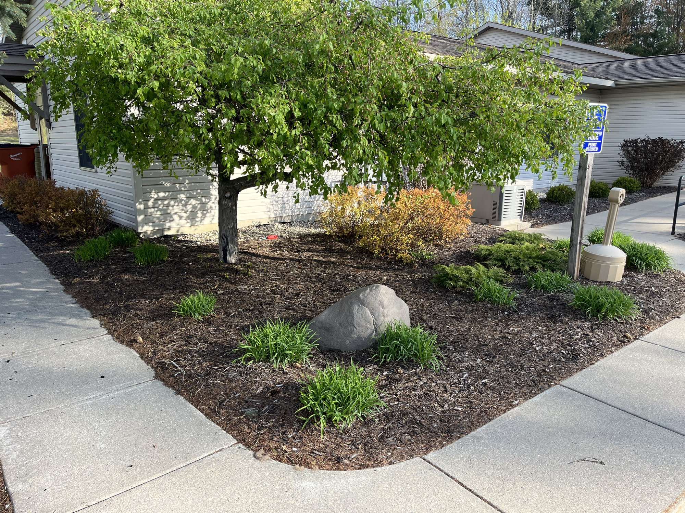

Fresh mulch is the single fastest way to make a property look cared-for. It frames your beds, holds in moisture, keeps weeds down and protects roots through Michigan's swings from heat to hard freeze. But the two questions we hear most are simple: when should I mulch, and how much do I need?
For most yards around Greenville and Edmore, mid-to-late spring is prime time — usually once the soil has warmed and the threat of a hard frost has passed, but before summer heat sets in. Mulching then locks in spring moisture and gives you a clean, finished look heading into the growing season.
A lighter fall touch-up also helps insulate roots before winter. You don't need a full re-mulch twice a year — one good spring application, topped off in fall where it's thinned out, is plenty for most properties.
Mulch is sold by the cubic yard, and the math is easier than it looks. The rule of thumb:
A common mistake is piling mulch against tree trunks — those "mulch volcanoes" trap moisture and invite rot. Keep mulch a few inches back from trunks and stems.
Mulch color sets the tone for the whole yard. We carry natural, brown, black, red and a playground blend. Black and brown read clean and modern against most homes; natural ages softly; red makes greenery pop. If you're not sure, we'll bring samples and hold them up against your house before you decide.
Good mulching isn't just dumping bags in a bed. We edge the beds first for a crisp line, clear old debris, lay the right depth and keep it off your siding and trunks. The result is a property that looks finished — not just filled.
Want fresh beds without the weekend of hauling? We deliver in bulk and install, or install mulch you already have. Request a free quote and we'll get you set for the season.
Call or text for a free estimate — we serve Greenville, Edmore, Carson City & the surrounding area.